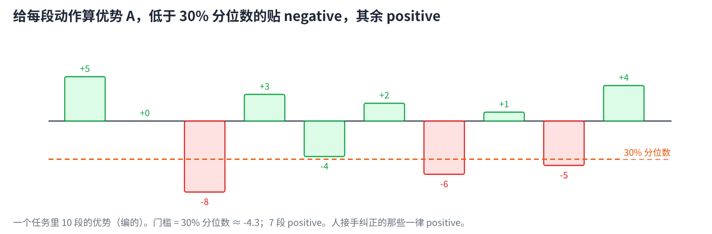
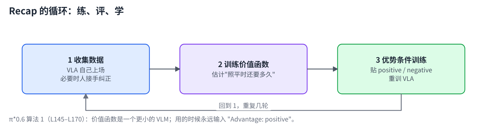

第 12 章 · RL 后训练：Recap，告诉模型"这段做得比平时好"
本地运行
git clone https://github.com/wikieden/vla-from-scratch
cd vla-from-scratch/code/notebooks
pip install jupyterlab torch numpy
jupyter lab ch12_rl_recap.ipynb也可以下载后直接用 VS Code 打开 .ipynb 运行。需要 GPU 的章节在 Colab 里选「代码执行程序 → 更改运行时类型 → GPU」。
本章回答：行为克隆最多只能学到和示范一样好（第 2 章），机器人怎么靠自己上场练习变得比示范更快、更稳？π0.6 的 Recap 具体怎么做？
讲解日期：2026-11-20 · 上一章：第 11 章 隐动作与世界模型 · 下一章：第 13 章 实时执行：RTC
对应原文：materials/text/papers/pistar06-recap-2511.14759.txt（π0.6 / Recap）摘要 L20–L41；引言 L59–L68；§III L100–L143；§IV L145–L320；§V L326–L440
本章缩写：RL = Reinforcement Learning（强化 / 学习）；Recap = RL with Experience and Corrections via Advantage-conditioned Policies（用经验和纠正做强化学习，靠"优势条件"的策略）；VF = Value Function（价值 / 函数）；CFG = Classifier-Free Guidance（无分类器 / 引导）；AWR = Advantage-Weighted Regression（优势 / 加权 / 回归）；PPO = Proximal Policy Optimization（近端 / 策略 / 优化）。全表见 appendix-glossary.md
讲解
第 1 步：为什么要在模仿之后再练（2026-11-20）
类比：学钢琴。 看老师弹一百遍（模仿），你最多弹得和老师一样；要更熟练，得自己一遍遍弹、听自己哪里卡住、改掉（练习）。
π*0.6 论文的说法（L59–L66）：只靠示范数据训练，会有复合误差（第 2 章），而且最多和示范数据一样好。要让机器人更可靠、更快，就要让它从自己上场的经验里学。
它能从三种数据里学（摘要 L27–L32）：
| 数据 | 是什么 |
|---|---|
| 示范 | 人遥操作的录像（第 2 章） |
| 自己上场的录像 | 机器人自己跑任务，记下成功还是失败 |
| 人的纠正 | 机器人干着干着要出错时，人接手遥操作纠正一段 |
奖励怎么定（L383–L392，式 5）：每一步 −1；最后成功得 0；最后失败得一个很大的负数 \(-C_{fail}\)。
读法："r 下标 t"是第 t 步的奖励；\(T\) 是最后一步。这样一来，一局的总奖励 = −（用了多少步）。成功越快，总奖励越高；失败很糟。
一句话：模仿只能学到示范的水平；要更好，得让机器人自己练，并且有个"打分标准"：越快成功越好。
第 2 步：价值和优势，"这段做得比平时好多少"（2026-11-20）
类比：导航软件的"预计还要 40 分钟"。 你开了 10 分钟，导航变成"预计还要 25 分钟"，说明这 10 分钟走得比预想的快；要是还剩 38 分钟，说明刚才堵了。
价值函数（Value Function，L186–L213）：看当前画面和任务，估计"照平时的水平，从这里到成功还要多少步"。因为每步 −1，价值就是 −（还剩几步）；论文按任务最大长度归一化到 (−1, 0)，0 = 已成功（L395–L402）。
π*0.6 的价值函数用一个比 VLA 小的 VLM 做主干，输出不是一个数，而是 201 个格子上的概率（分布式价值，L192–L206）。
优势（advantage，L112–L114）：
读法："A 括号 o t、a t 等于：从 t 到 t 加 N 减 1 的奖励加起来，加上 N 步之后的价值，减去现在的价值"。
意思：走了这 N 步实际得到的，比"照平时水平预计能得到的"多了多少。
数字例子（编的数，每段 N = 10 步，奖励每步 −1）：
| 情况 | 走之前还剩 | 走 10 步后还剩 | A = −10 − 后 + 前 | 意思 |
|---|---|---|---|---|
| 顺利 | 40 | 25 | −10 − 25 + 40 = +5 | 比平时快 |
| 一般 | 40 | 30 | −10 − 30 + 40 = 0 | 和平时一样 |
| 衣服掉了 | 40 | 38 | −10 − 38 + 40 = −8 | 比平时差 |
（价值 V 是"−还剩几步"，所以 \(V(o_{t+N}) - V(o_t)\) = 前面还剩 − 后面还剩。）
论文图 4 显示价值函数能看出失误：出错时价值曲线会往下掉（L249–L251）。
一句话：价值 = 照平时还要多久；优势 = 这一段比平时快了还是慢了。

图 12-1 · 一个任务 10 段的优势：低于门槛的贴 negative。
第 3 步：优势条件，给动作贴"positive / negative"标签（2026-11-20）
类比：给练习录像贴标签。 把自己弹琴的录像剪成一段段，好的贴"这段弹得好"，差的贴"这段弹得差"。以后让模型学的时候，告诉它"照着'弹得好'的那些学"。
做法（L253–L300、L326–L335）：
- 用价值函数给数据里每段动作算优势 A；
- 设一个门槛 \(\epsilon_\ell\)（每个任务一个，取这个任务所有 A 的 30% 分位数，L437），A 高于门槛的贴 \(I_t\) = True，否则 False；
- 人纠正的动作一律贴 True（假设人的纠正总是好的，L258–L262）；
- 把标签变成一句文字放进输入："Advantage: positive" 或 "Advantage: negative"（L329–L333）；
- 训练损失（式 3）：
读法："对 θ 最小化：负的 log π θ（a t 给定 o t、ℓ），减 α 乘 log π θ（a t 给定 I t、o t、ℓ）"。意思：模型既要会"不带标签地模仿所有数据"，又要会"带着标签模仿"。
- 用的时候永远输入 "Advantage: positive"：模型就按"好的那部分"的样子出动作。
为什么这样能变好？ 这和图像生成里的 CFG 是同一个思路（L268–L271）：同一个模型学会"有条件"和"无条件"两种分布，用的时候偏向好的条件。论文推出：带"positive"的分布就是对原策略的一种改进（式 2，L253–L265）。
好处： - 不用 PPO 那种要算策略梯度的在线 RL，训练就是普通的监督学习，稳定； - 对 flow matching 这种连续动作的 VLA 也能用（L128–L132），因为只是多了一句输入文字。
数字例子（接第 2 步）：一个任务所有片段的 A 排好序，30% 分位数是 −4。那么 A = +5 和 0 贴 positive；−8 贴 negative。大约 70% 的片段是 positive。
一句话：给每段动作贴"比平时好 / 差"的文字标签一起训练，上场时只说"好"。
第 4 步：Recap 的循环和效果（2026-11-20）
三步循环（L145–L170，算法 1）：
1. 收集数据：让当前 VLA 去做任务，记下成功/失败；必要时人接手纠正
2. 训练价值函数：用到目前为止的所有数据
3. 优势条件训练：用新价值函数给数据贴标签，重训 VLA
→ 回到 1，重复一到几轮
先用所有示范数据预训练一个通用模型（π0.6 本身就是带优势条件的，称为离线 RL 预训练），再对每个任务用自己上场的数据做几轮（L314–L320）。
效果（摘要 L36–L41、L139）：π*0.6 能在真实家庭里叠衣服、可靠地组装纸箱、用专业咖啡机做浓缩咖啡；最难的任务上，每小时完成数翻倍以上，失败率大约减半。
和前几章的关系：π*0.6 的 VLA 用了第 9 章的 stop-gradient 小脑（图 3 说明，L189–L192），价值函数是另一个更小的 VLM。
一句话：练、评、学，循环几轮，越练越快越稳。

图 12-2 · 收集数据 → 训练价值函数 → 优势条件训练，重复几轮。
动画演示：Recap 的优势标签

可交互版：animations/12-recap-advantage.html（可播放、单步、换一局）。这一局的数据是编的。
怎么看：
- 上图：价值曲线（离成功越近越高）。中途"衣服掉了"，曲线往下掉：价值函数看出了失误（第 2 步）。
- 下图：每走一段（10 步）出一根柱子，就是这段的优势 A。掉衣服那段是一根很长的负柱子（第 2 步数字例子）。
- 全部走完后，橙线是 30% 分位数门槛：低于它的变红（negative），其余变绿（positive）（第 3 步）。
练习与作答记录
题 1（第 1–2 步）： 1. Recap 的奖励是怎么定的？为什么这样定以后，"总奖励高"就等于"成功得快"？ 2. 走之前价值估计还剩 60 步，走 10 步后估计还剩 52 步，优势 A 是多少？比平时好还是差？
作答：（待作答）
题 2（第 3 步）： 1. "Advantage: positive / negative" 是怎么进入模型的？ 2. 为什么用的时候永远输入 positive？ 3. 人接手纠正的那些动作贴什么标签？为什么？
作答：（待作答）
题 3（第 4 步）：Recap 一轮循环有哪三步？它比 PPO 这类在线 RL 好在哪？
作答：（待作答）
口诀
看老师只能学到老师那样，自己练才能更好。
价值是导航的"还要多久"，优势是"比预计快了多少"。
好段贴正，差段贴负，上场只说"正"。
练、评、学，转几圈。
本章复习卡片
V31（优势公式与 +5 / 0 / −8 的例子）、V32（价值函数 201 格、30% 分位数门槛、效果）。练习做完后，按答错、卡住的地方再补。
附录 · 延伸阅读
留给以后深入学习用，不影响本章主线。★ 是建议先读的。
推荐阅读
| 读什么 | 读哪里 | 读它为了什么 |
|---|---|---|
| ★ π*0.6 / Recap（Physical Intelligence，2025） | pistar06-recap-2511.14759.txt §III L100–L143；§IV L145–L320（式 1–3、算法 1）；§V L326–L440 |
奖励、分布式价值函数、优势条件、整个循环 |
| CFGRL（Frans 等） | π*0.6 文献 [4]，本地无原文 | 优势条件 = 无分类器引导的 RL 版本 |
| SimpleVLA-RL（2025） | simplevla-rl-2509.09674.txt |
另一条路：对离散 token VLA 直接用结果奖励做在线 RL |
| CS285 深度强化学习 | 本仓库 cs285-deep-rl/（强化学习讲义书） |
价值函数、优势、策略梯度的系统讲解 |
| 第 2 章 行为克隆 | 02-behavior-cloning.md |
为什么模仿有上限、复合误差 |
数学原理
- 回报与价值：回报 \(R_t = \sum_{t' \ge t} r_{t'}\)；价值 \(V(o_t) = \mathbb{E}[R_t]\)，是"照平时的策略"能得到的期望回报。
- n 步优势：\(A = \sum_{k<N} r_{t+k} + V(o_{t+N}) - V(o_t)\)，用 N 步真实奖励加一个估计，比只用估计更准、比只用真实回报方差更小。
- 分布式价值：不只预测一个数，而是预测回报落在 201 个格子上的概率，用交叉熵训练（式 1）。
- 正则化 RL 的闭式解：\(\hat\pi(a \mid o) \propto \pi_{ref}(a \mid o)\exp(A/\beta)\)；Recap 用"条件在优势标签上"来表示这个改进后的策略，不用显式算指数权重（式 2）。
公式清单
| 公式 | 意思 |
|---|---|
| \(r_t = -1\)（过程中），\(0\)（成功），\(-C_{fail}\)（失败） | 奖励：越快成功越好 |
| \(A(o_t, a_t) = \sum_{t'=t}^{t+N-1} r_{t'} + V(o_{t+N}) - V(o_t)\) | 优势：这段比平时好多少 |
| \(I_t = \mathbb{1}[A(o_t, a_t, \ell) > \epsilon_\ell]\)，\(\epsilon_\ell\) = 30% 分位数 | 贴 positive / negative 标签 |
| \(\min_\theta \mathbb{E}[-\log\pi_\theta(a \mid o, \ell) - \alpha\log\pi_\theta(a \mid I, o, \ell)]\) | 无条件 + 有条件一起学（式 3） |
代码对照：把本章的数字用代码算一遍
纯 Python + NumPy，不需要 GPU。代码在仓库本地
vla-deep-dive/solutions/chapter-code/ch12_rl_recap.py，配套测试tests/test_ch12.py：
bash cd vla-deep-dive/solutions/chapter-code uv run python ch12_rl_recap.py uv run pytest tests/test_ch12.py
讲义 ↔ 代码：
| 讲义 | 写法 | 跑出来 |
|---|---|---|
| 第 1 步 | episode_return(steps, success) |
30 步成功 −29 > 50 步成功 −49 > 失败 −149 |
| 第 2 步 | advantage(40, after) |
+5 / 0 / −8 |
| 第 3 步 | label(advs) |
门槛 −4.3，7 / 10 段 positive |
代码里才看得到的 3 件事：
- 最后一步成功得 0 而不是 −1，所以总奖励是 −(T − 1)，比讲义说的"−用了多少步"差 1，不影响"越快越好"。
label用 NumPy 默认的线性插值分位数；10 个数的 30% 分位数落在第 3、4 小的数之间，所以是 −4.3 而不是某个原始值。C_fail默认取 100，只要比任何一局的步数都大，失败就一定比成功差。
自己改一改（不影响练习答案）：
- 把
C_fail改成 10，看 50 步失败和 30 步成功谁的总奖励高。 - 给
label加上人纠正的片段编号，看 positive 比例变成多少。